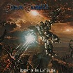

|
|
||
Luca Turilli : Prophet of the Last Eclipse (2002) |
|

http://www.lucaturilli.net |
1. Aenigma 1:58 |
9.5/10 |
|
"Prophet of the Last Eclipse" es el segundo disco en solitario del guitarrista, líder del grupo Rhapsody, Luca Turilli. Temáticamente éste es uno de esos álbums conceptuales de línea argumental de fantasía, no demasiado original y en este caso en un ambiente futurista, que Luca acostumbra a crear. Musicalmente es otra obra maestra de este genio de las orquestaciones y los coros hábilmente combinados con el doble bombo y la guitarra eléctrica, con un estilo más progresivo y electrónico del que hasta ahora venía siendo la norma con Rhapsody y en su primer álbum en solitario. Con varios coros, incluyendo uno de niños, voces femeninas y un quinteto de cuerda, este es un trabajo complejo, que incorpora sonidos clásicos y electrónicos al heavy metal de forma magistral. La presentación del disco es buena, pero en la versión en digipack es excepcional: una caja con el diseño de la portada enmarcado y el digipack en su interior, en tapas rígidas, con un libreto de 36 páginas y comentarios de Luca para cada canción. Y adesde el arranque del disco, con "Aenigma", se hace patente que el sonido de este álbum incorpora sonidos electrónicos y futuristas al repertorio habitual de Luca. El disco tiene, como no, varios temas rápidos y pomposos, marca de la casa de Luca Turilli como "War of the Universe" que es un auténtico temazo: doble bombo, coros espectaculares, estribillo pegadizo y la voz de Olaf Hayer que no decepciona en absoluto; "Rider of the Astral Fire", más rápido y con mayor presencia de sonidos electrónicos, y otro fantástico estribillo; "The Age of Mystic Ice", de corte aún más futurista; "Prince of the Starlight" de sonido más Rhapsody, y con otro señorial estribillo con coros; "Demonheart" un tema algo más oscuro y contundente, y que en la versión en digipack aparece de nuevo al final, como bonus, cantado nada menos que por André Matos (ex-Angra). Aparecen también canciones más suaves, como "Zaephyr Skie's Theme", interpretado por la dulce voz de Amanda Somerville, o "Timeless Oceans" una balada más clásica. Mención aparte merecen "New Century's Tarantella", que es una incursión en la música tradicional italiana, de la que Luca se confiesa un apasionado, y que realmente no termina de encajar en el disco, "Prophet of the Last Eclipse", tema épico, cargado de fuerza y coros increíbles, estribillos pegadizos, cambios de ritmo y que me lleva a preguntarme qué clase de pacto es el que tiene Luca Turilli con el diablo para contar con esta creatividad sin límites... Finalmente mencionaré el otro bonus que viene con la edición limitada, "Dark Comet's Reign", un tema de sonido aún más clásico que el resto del álbum y que podría haber encajado perfectamente en cualquier disco de Rhapsody. Tengo que confesar mi admiración por todo lo que hasta ahora ha hecho Luca Turilli, con Rhapsody y en solitario, y os aseguro que este puede que sea su mejor disco hasta la fecha. Y mientras siga así aquí tiene un seguidor incondicional... |
||
Rubén Béjar |
||